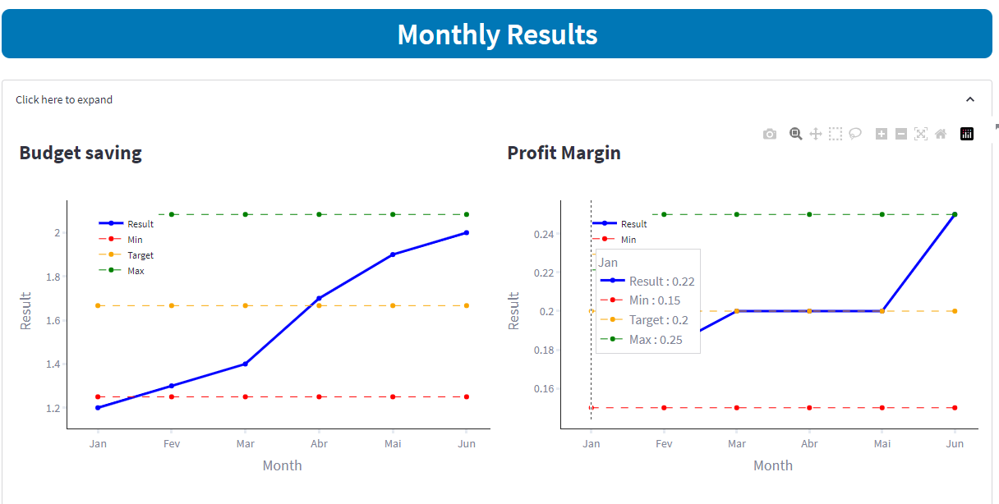

Problem description
Managing and monitoring corporate and business unit goals across different departments and teams can be a challenging task. Disparate systems and lack of visibility often hinder collaboration and alignment. Organizations face the problem of scattered Key Performance Indicators (KPIs) residing in various places such as Google Sheets, Jira, Looker, and Databases.
YTD Results and Bonus Calculator
This fragmented setup makes it difficult for people to easily track and monitor goals. In order to address this issue, there is a need to ingest data from different sources, integrate them, and provide a centralized solution that offers real-time insights and engagement to drive goal attainment.
Key Results
Centralizing Goal Information: The Goals Tracker project serves as a hub, consolidating all goal-related information from various sources into one centralized location. This eliminates the need for individuals to search through different platforms, fostering collaboration and coordination across the organization.
Enhancing Visibility and Engagement: With the Goals Tracker, employees gain visibility into the progress of goals that were previously scattered across multiple systems. They can access year-to-date and monthly views, staying informed and engaged in achieving the company's objectives.
Real-Time Performance Insights: The Goals Tracker project ingests data from different sources, integrates them, and provides real-time tracking of goal performance. This eliminates the challenge of manually collecting and consolidating data, empowering decision-makers to intervene and make timely course corrections, ensuring that the organization stays on track to achieve its targets.
Conclusion
 In conclusion, the Goals Tracker project, developed using Python and Streamlit, addresses the pain points associated with managing corporate and business unit goals scattered across different systems.
By ingesting data from various sources, integrating them, and providing a centralized solution, it eliminates the challenge of tracking goals across multiple platforms. The Goals Tracker enhances visibility, provides real-time insights, and introduces bonus multipliers, promoting collaboration, alignment, and a high-performance culture.
Its successful implementation streamlines goal management and empowers the company to achieve objectives efficiently. The Goals Tracker proves to be an invaluable asset for businesses striving for goal-driven success in the face of complex data fragmentation.